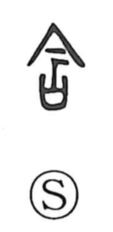

含

Uncategorized
Kun: fukumu, fukumeru | On: gan
to contain ・ to include ・ to hold in the mouth ・ to soak ・ to saturate
Explanation
含 is a compound of 今 and 口. Shirakawa explains that 今 originally depicted the lid of a jar fitted with a stopcock. The combined graph evokes an ancient funerary rite: placing a piece of jade in the mouth of the deceased and closing it to keep the dead qi from escaping. This mouth-jade, called gangyoku (含玉), was often carved in the shape of a cicada as a prayer for revival. From the concrete image of holding jade in the mouth, the character came to mean “to keep in the mouth,” and by extension “to contain, include”; in causative use it further developed senses such as “to let something soak in” or “saturate.”